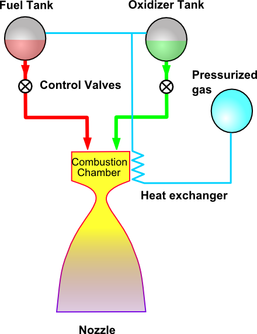
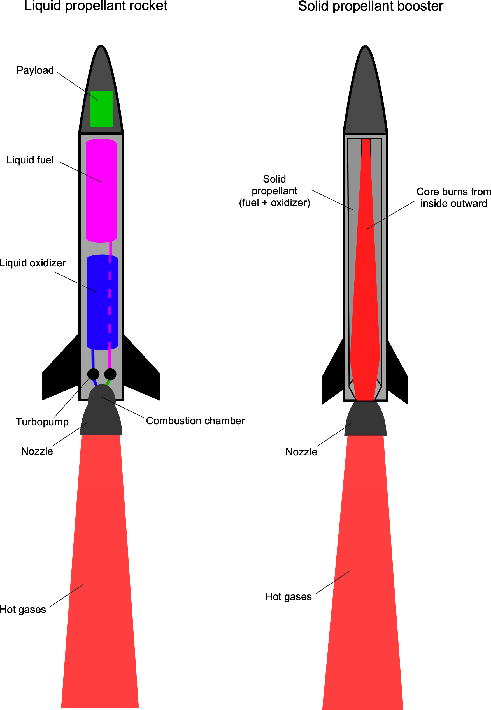

In a rocket engine , fuel and a source of oxygen, called an oxidizer, are mixed and
exploded in a combustion chamber. The combustion produces hot exhaust which is passed through a nozzle to
accelerate the flow and produce thrust. For a rocket, the accelerated gas, or working fluid, is the hot
exhaust produced during combustion.(Figure below:Liquid
fuel
rocket)

Liquid Propellant Rocket
In a liquid rocket, the propellants, the fuel and the oxidizer, are stored separately as liquids and are
pumped into the combustion chamber of the nozzle where burning occurs. With a liquid rocket, you can stop the thrust by
turning off the flow of propellants. Liquid rockets tend to be heavier and more complex because of the pumps and
storage tanks and most expensive due to their complexity. The propellants are loaded into the rocket just before
launch.
Solid Propellant Rocket
In a solid rocket, the propellants are mixed together and packed into a solid cylinder. Under normal
temperature conditions, the propellants do not burn; but they will burn when exposed to a source of heat
provided by an igniter. Once the burning starts, it proceeds until all the propellant is exhausted. A solid rocket is
much easier to handle and can sit for years before firing. It can generate more thrust over shorter periods and
simple design, cheap to build.
